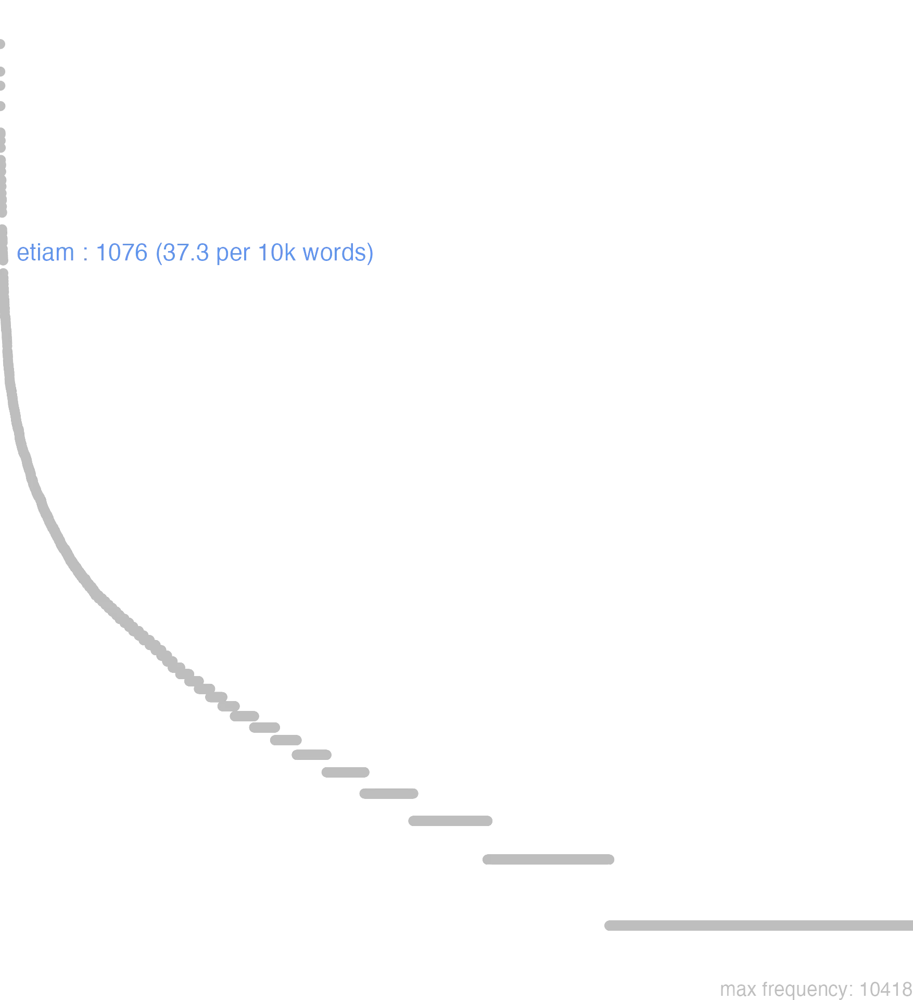

54 etiam
54.0.0.1 bases lexicais
id: http://lila-erc.eu/data/id/lemma/101554
classe: advérbio
paradigma: indeclinável
outras grafias:
variantes do lema:
no data
ĕtĭam
no data
54.0.0.2 dicionários tradicionais
etĭam
conj.
conj.
1 Sent. próprio E agora, agora ainda com ideia temporal Plaut. Trin. 572.
2 Daí, em sent. mais geral: Ainda, além disso, também Cíc. Fin. 2, 17.
3 Donde: Mesmo, até Cíc. Fin. 2, 18.
4 E nas confirmações Pois ainda, sim, certamente Cíc. Ac. 2, 104.
no data
Etiam
conjunç.
conjunç.
1 Cic. sim, tambem, ainda, mas antes.
[EXEMPLOS]
X
etiam atque etiam Cic Extremamente
etiam num Ter Até o presente
etiam nunc Cic Até o presente
etiam si Cic Ainda que
etiam tum Cic Até então
etiam ut Cic Ainda que
Etiam
Conjunct.
1. 2. b.
Conjunct.
1. 2. b.
1 pro Quoque tambem
[EXEMPLOS]
X
etiam, atque etiam muito, summamente, ou todo possivel
etiamdum ainda, ou agora pro Adhuc, vel nunc
Etiam
Adverb. respondendi affirmativè
1. 2. b.
Etiam
coniunctio.
coniunctio.
1 tambẽ. ou si
Etiam1 atê
54.0.0.3 dados de corpus
![This chart plots collocate by scoreSUBST, for the headword etiam here are all the values plotted: collocate: sed; scoreSUBST: 0. collocate: uerum; scoreSUBST: 0. collocate: si; scoreSUBST: 0. collocate: tum; scoreSUBST: 0. collocate: quin; scoreSUBST: 0. collocate: nunc; scoreSUBST: 0. collocate: ille; scoreSUBST: 0. collocate: atque; scoreSUBST: 0. collocate: aut; scoreSUBST: 0. collocate: qui; scoreSUBST: 0. collocate: multo; scoreSUBST: 0. collocate: multus; scoreSUBST: 0. collocate: deinde; scoreSUBST: 0. collocate: studium; scoreSUBST: 2. collocate: accedo; scoreSUBST: 0. collocate: addo; scoreSUBST: 0. collocate: nonnullus; scoreSUBST: 0. collocate: num; scoreSUBST: 0. collocate: sine; scoreSUBST: 0. collocate: spes; scoreSUBST: 2. collocate: saepe; scoreSUBST: 0. collocate: posteri; scoreSUBST: 2. collocate: plane; scoreSUBST: 0. collocate: augeo; scoreSUBST: 0. collocate: necesse; scoreSUBST: 0. collocate: spero; scoreSUBST: 0. collocate: oculus; scoreSUBST: 1. collocate: post; scoreSUBST: 0. collocate: obsum; scoreSUBST: 0. collocate: imperitus; scoreSUBST: 0. collocate: adiuuo; scoreSUBST: 0. collocate: hercle; scoreSUBST: 0. collocate: orno; scoreSUBST: 0. collocate: inuitus; scoreSUBST: 0. collocate: libenter; scoreSUBST: 0. collocate: statuo; scoreSUBST: 0](./Media/wordcloud__xx101-116-105-97-109xx__BY_collocate_scoreSUBST.webp)
![This chart plots collocate by scoreADJ, for the headword etiam here are all the values plotted: collocate: sed; scoreADJ: 0. collocate: uerum; scoreADJ: 0. collocate: si; scoreADJ: 0. collocate: tum; scoreADJ: 0. collocate: quin; scoreADJ: 0. collocate: nunc; scoreADJ: 0. collocate: ille; scoreADJ: 0. collocate: atque; scoreADJ: 0. collocate: aut; scoreADJ: 0. collocate: qui; scoreADJ: 0. collocate: multo; scoreADJ: 0. collocate: multus; scoreADJ: 0. collocate: deinde; scoreADJ: 0. collocate: studium; scoreADJ: 0. collocate: accedo; scoreADJ: 0. collocate: addo; scoreADJ: 0. collocate: nonnullus; scoreADJ: 0. collocate: num; scoreADJ: 0. collocate: sine; scoreADJ: 0. collocate: spes; scoreADJ: 0. collocate: saepe; scoreADJ: 0. collocate: posteri; scoreADJ: 0. collocate: plane; scoreADJ: 0. collocate: augeo; scoreADJ: 0. collocate: necesse; scoreADJ: 0. collocate: spero; scoreADJ: 0. collocate: oculus; scoreADJ: 0. collocate: post; scoreADJ: 0. collocate: obsum; scoreADJ: 0. collocate: imperitus; scoreADJ: 2. collocate: adiuuo; scoreADJ: 0. collocate: hercle; scoreADJ: 0. collocate: orno; scoreADJ: 0. collocate: inuitus; scoreADJ: 2. collocate: libenter; scoreADJ: 0. collocate: statuo; scoreADJ: 0](./Media/wordcloud__xx101-116-105-97-109xx__BY_collocate_scoreADJ.webp)
![This chart plots collocate by scoreVERBO, for the headword etiam here are all the values plotted: collocate: sed; scoreVERBO: 0. collocate: uerum; scoreVERBO: 0. collocate: si; scoreVERBO: 0. collocate: tum; scoreVERBO: 0. collocate: quin; scoreVERBO: 0. collocate: nunc; scoreVERBO: 0. collocate: ille; scoreVERBO: 0. collocate: atque; scoreVERBO: 0. collocate: aut; scoreVERBO: 0. collocate: qui; scoreVERBO: 0. collocate: multo; scoreVERBO: 0. collocate: multus; scoreVERBO: 0. collocate: deinde; scoreVERBO: 0. collocate: studium; scoreVERBO: 0. collocate: accedo; scoreVERBO: 2. collocate: addo; scoreVERBO: 2. collocate: nonnullus; scoreVERBO: 0. collocate: num; scoreVERBO: 0. collocate: sine; scoreVERBO: 0. collocate: spes; scoreVERBO: 0. collocate: saepe; scoreVERBO: 0. collocate: posteri; scoreVERBO: 0. collocate: plane; scoreVERBO: 0. collocate: augeo; scoreVERBO: 2. collocate: necesse; scoreVERBO: 0. collocate: spero; scoreVERBO: 1. collocate: oculus; scoreVERBO: 0. collocate: post; scoreVERBO: 0. collocate: obsum; scoreVERBO: 2. collocate: imperitus; scoreVERBO: 0. collocate: adiuuo; scoreVERBO: 2. collocate: hercle; scoreVERBO: 0. collocate: orno; scoreVERBO: 2. collocate: inuitus; scoreVERBO: 0. collocate: libenter; scoreVERBO: 0. collocate: statuo; scoreVERBO: 1](./Media/wordcloud__xx101-116-105-97-109xx__BY_collocate_scoreVERBO.webp)
![This chart plots collocate by scoreADV, for the headword etiam here are all the values plotted: collocate: sed; scoreADV: 0. collocate: uerum; scoreADV: 5. collocate: si; scoreADV: 0. collocate: tum; scoreADV: 3. collocate: quin; scoreADV: 0. collocate: nunc; scoreADV: 2. collocate: ille; scoreADV: 0. collocate: atque; scoreADV: 0. collocate: aut; scoreADV: 0. collocate: qui; scoreADV: 0. collocate: multo; scoreADV: 2. collocate: multus; scoreADV: 0. collocate: deinde; scoreADV: 2. collocate: studium; scoreADV: 0. collocate: accedo; scoreADV: 0. collocate: addo; scoreADV: 0. collocate: nonnullus; scoreADV: 0. collocate: num; scoreADV: 2. collocate: sine; scoreADV: 0. collocate: spes; scoreADV: 0. collocate: saepe; scoreADV: 1. collocate: posteri; scoreADV: 0. collocate: plane; scoreADV: 2. collocate: augeo; scoreADV: 0. collocate: necesse; scoreADV: 2. collocate: spero; scoreADV: 0. collocate: oculus; scoreADV: 0. collocate: post; scoreADV: 0. collocate: obsum; scoreADV: 0. collocate: imperitus; scoreADV: 0. collocate: adiuuo; scoreADV: 0. collocate: hercle; scoreADV: 0. collocate: orno; scoreADV: 0. collocate: inuitus; scoreADV: 0. collocate: libenter; scoreADV: 2. collocate: statuo; scoreADV: 0](./Media/wordcloud__xx101-116-105-97-109xx__BY_collocate_scoreADV.webp)
![This chart plots collocate by scoreFUNC, for the headword etiam here are all the values plotted: collocate: sed; scoreFUNC: 0. collocate: uerum; scoreFUNC: 0. collocate: si; scoreFUNC: 40. collocate: tum; scoreFUNC: 0. collocate: quin; scoreFUNC: 30. collocate: nunc; scoreFUNC: 0. collocate: ille; scoreFUNC: 0. collocate: atque; scoreFUNC: 0. collocate: aut; scoreFUNC: 0. collocate: qui; scoreFUNC: 0. collocate: multo; scoreFUNC: 0. collocate: multus; scoreFUNC: 0. collocate: deinde; scoreFUNC: 0. collocate: studium; scoreFUNC: 0. collocate: accedo; scoreFUNC: 0. collocate: addo; scoreFUNC: 0. collocate: nonnullus; scoreFUNC: 0. collocate: num; scoreFUNC: 0. collocate: sine; scoreFUNC: 10. collocate: spes; scoreFUNC: 0. collocate: saepe; scoreFUNC: 0. collocate: posteri; scoreFUNC: 0. collocate: plane; scoreFUNC: 0. collocate: augeo; scoreFUNC: 0. collocate: necesse; scoreFUNC: 0. collocate: spero; scoreFUNC: 0. collocate: oculus; scoreFUNC: 0. collocate: post; scoreFUNC: 10. collocate: obsum; scoreFUNC: 0. collocate: imperitus; scoreFUNC: 0. collocate: adiuuo; scoreFUNC: 0. collocate: hercle; scoreFUNC: 0. collocate: orno; scoreFUNC: 0. collocate: inuitus; scoreFUNC: 0. collocate: libenter; scoreFUNC: 0. collocate: statuo; scoreFUNC: 0](./Media/wordcloud__xx101-116-105-97-109xx__BY_collocate_scoreFUNC.webp)
![This charts plots the frequency of lemma by author_Frequencies. The Suetonius subcorpus registers the highest normalized frequency, with the value of 66.15 and an absolute frequency of 6. The Cicero subcorpus follows, with a normalized frequency of 53.64 and an absolute frequency of 861. the subcorpus with the least normalized frequency is Vergilius with the normalized value of 3.86 and an absolute freqeuncy of 2. here are all the values: subcorpus: Caesar ; normalized frequency: 52 ; absolute frequency: 19.6389455396933. subcorpus: Cicero ; normalized frequency: 861 ; absolute frequency: 53.6368393511251. subcorpus: Horatius ; normalized frequency: 5 ; absolute frequency: 4.44010301038984. subcorpus: Ovidius ; normalized frequency: 3 ; absolute frequency: 5.14756348661633. subcorpus: Phaedrus ; normalized frequency: 6 ; absolute frequency: 9.10885076666161. subcorpus: Sallustius ; normalized frequency: 11 ; absolute frequency: 10.2031351451628. subcorpus: Seneca ; normalized frequency: 114 ; absolute frequency: 21.2761986525074. subcorpus: Suetonius ; normalized frequency: 6 ; absolute frequency: 66.1521499448732. subcorpus: Tacitus ; normalized frequency: 14 ; absolute frequency: 48.0604188122211. subcorpus: Vergilius ; normalized frequency: 2 ; absolute frequency: 3.86100386100386. subcorpus: Hieronymus ; normalized frequency: 2 ; absolute frequency: 4.49337227589306](./Media/barchart__xx101-116-105-97-109xx__lemma_BY_author_Frequencies.webp)
![This charts plots the frequency of lemma by genre_Frequencies. The Prosa.oratória subcorpus registers the highest normalized frequency, with the value of 54.92 and an absolute frequency of 572. The Prosa.oratória subcorpus follows, with a normalized frequency of 54.92 and an absolute frequency of 572. the subcorpus with the least normalized frequency is Poesia.trágica with the normalized value of 2.61 and an absolute freqeuncy of 3. here are all the values: subcorpus: Prosa.histórica ; normalized frequency: 83 ; absolute frequency: 20.2049709097106. subcorpus: Prosa.filosófica ; normalized frequency: 229 ; absolute frequency: 37.7259023739312. subcorpus: Prosa.oratória ; normalized frequency: 572 ; absolute frequency: 54.9192053997484. subcorpus: Prosa.epistolográfica ; normalized frequency: 171 ; absolute frequency: 45.3112165134211. subcorpus: Poesia.lírica ; normalized frequency: 6 ; absolute frequency: 5.04753091612686. subcorpus: Poesia.didática ; normalized frequency: 8 ; absolute frequency: 6.78598693697515. subcorpus: Poesia.trágica ; normalized frequency: 3 ; absolute frequency: 2.60597637248089. subcorpus: Poesia.épica ; normalized frequency: 2 ; absolute frequency: 3.86100386100386. subcorpus: Prosa.ficcional ; normalized frequency: 2 ; absolute frequency: 4.49337227589306](./Media/barchart__xx101-116-105-97-109xx__lemma_BY_genre_Frequencies.webp)
![This charts plots the frequency of lemma by period_Frequencies. The II.d.C. subcorpus registers the highest normalized frequency, with the value of 52.36 and an absolute frequency of 20. The I.a.C. subcorpus follows, with a normalized frequency of 43.38 and an absolute frequency of 932. the subcorpus with the least normalized frequency is IV.d.C. with the normalized value of 4.49 and an absolute freqeuncy of 2. here are all the values: subcorpus: I.a.C. ; normalized frequency: 932 ; absolute frequency: 43.3791016988597. subcorpus: I.d.C. ; normalized frequency: 122 ; absolute frequency: 18.6629952577635. subcorpus: II.d.C. ; normalized frequency: 20 ; absolute frequency: 52.3560209424084. subcorpus: IV.d.C. ; normalized frequency: 2 ; absolute frequency: 4.49337227589306](./Media/barchart__xx101-116-105-97-109xx__lemma_BY_period_Frequencies.webp)
fortasse accedent etiam consules designati
Cic.Att.4.15.9
Talvez venham também os cônsules designados. [JDD]
sed pluris etiam ipse mittito
Cic.Att.1.16.17
mas me manda mais tu também. [JDD]
quid si etiam obfutura est
Cic.Phil.12.7.4
E se vai até mesmo causar dano? [JDD]
quartus si etiam hoc quaeris Hortensius
Cic.Att.1.13.2
o quarto, se ainda queres saber, Hortêncio. [JDD]
terrent etiam nunc nubila mentem .
Ov.Met.1.357
ainda agora as nuvens me aterrorizam a mente. [JDD, de outra edição]
quae res etiam auxit dolorem meum
Cic.Att.4.6.2
Esse fato inclusive aumentou a minha dor. [JDD]
uiuet enim etiam sine amicis beate
Sen.Ep.9.15
pois viverá feliz mesmo sem amigos. [JDD]
nec solum inscientibus sed etiam inuitis
Cic.Phil.12.9.4
E não só sem saberem, mas também contra a vontade deles. [JDD]
addit etiam illud equites non optimos misisse
Cic.Deiot.24
24 Acrescenta ainda o seguinte: que não enviou os melhores cavaleiros. [JDD]
sed eadem bonitas etiam ad multitudinem pertinet
Cic.Amici.50
Mas essa mesma ternura diz respeito também à multidão. [JDD]
nam etiam malo multi digni sicut ipse
Cic.Phil.3.22.2
Pois há também muitos dignos de castigo, como ele próprio. [JDD]
multo etiam grauius quod sit destitutus queritur
Caes.Gal.1.16.6
Queixa-se ainda com mais amargor de ter sido abandonado. [JDD]
quid si illi etiam nunc permiseris crescere
Sen.Ep.19.8
O que será se ainda agora tu lhe permitires crescer? [JDD]
qui etiam Gabinium apud timidos iudices adiuvit
Cic.Att.4.18.3
que até mesmo tem servido de ajuda a Gabínio diante de juízes fracos. [JDD]
accedit eodem etiam noster Hortensius multi praeterea boni
Cic.Att.1.14.5
a esse mesmo local aproximou-se também o nosso querido Hortêncio, além de muitos homens de bem. [JDD]
sed tamen etiam illud quod non speraram audi
Cic.Att.1.14.6
Mas escuta também algo que eu não esperava. [JDD]
quas ego non solum tuli sed etiam ornavi
Cic.Att.1.17.9
que eu não só tolerei, mas também expus belamente. [JDD]
nollem primum rei publicae causa deinde etiam dignitatis tuae
Cic.Phil.14.18.7
Eu não queria, primeiro por causa da república, depois por causa também de tua dignidade. [JDD]
ipse si uelit num etiam Lucium fratrem passurum arbitramur
Cic.Phil.6.10.1
Se ele próprio quisesse, por acaso julgamos que seu irmão Lúcio permitiria? [JDD]
hic mihi primum meum consilium defuit sed etiam obfuit
Cic.Att.3.15.5
Aqui me faltou pela primeira vez o meu discernimento, mas ainda me danou. [JDD]
etiam hercule est in non accipiendo non nulla gloria
Cic.Att.2.5.1
Mesmo em não se aceitando, há, por hércules, alguma glória. [JDD]
atque his irascebamur hos requirebamus his non nulli etiam minabantur
Cic.Lig.33
E estávamos irritados com eles, os procurávamos, alguns até mesmo os ameaçavam. [JDD]
nec ille armis solum sed etiam decretis nostris urgendus est
Cic.Phil.3.32.7
Ele deve ser perseguido não só com as armas, mas também com nossos decretos. [JDD, de outra edição]
flagrabant uitia libidinis apud illum uigebant etiam studia rei militaris
Cic.Cael.12
Ardiam nele os vícios do prazer libidinoso; florescia também o gosto pelos assuntos militares. [JDD]
credo nisi eam exerceas aut etiam si sis natura tardior
Cic.Sen.21
Acredito, se não a exercitas, ou também se é um tanto lento por natureza. [JDD]
atque in ea quae non uolt saepe etiam adulescentia incurrit
Cic.Sen.25
E nessas coisas que não quer ver, até mesmo a juventude muitas vezes incorre. [JDD]
mors enim admota etiam inperitis animum dedit non uitandi ineuitabilia
Sen.Ep.30.8
Pois a morte imediata deu, mesmo aos ignorantes, o ânimo de não evitar o inevitável. [JDD]
quod superest etiam puerum Ciceronem curabis et amabis ut facis
Cic.Att.4.7.3
O que resta? Cuidarás ainda do menino Cícero e o amarás, como fazes. [JDD, de outra edição]
Bibulus ne cogitabat quidem etiam nunc in provinciam suam accedere
Cic.Att.5.16.4
Bíbulo nem sequer cogita ainda agora em aproximar-se de sua província. [JDD]
itaque eam sapientes numquam inuiti fortes saepe etiam libenter oppetiuerunt
Cic.Catil.4.7.14
E por isso os sábios a afrontaram nunca contra a vontade, os fortes muitas vezes até com prazer. [JDD, de outra edição]
statuerunt etiam tribuni militares qui in exercitu Caesaris bis fuerunt
Cic.Phil.6.14.1
Erigiram também [outra] os tribunos militares, que estiveram por duas vezes no exército de César. [JDD]
dies autem non modo non levat luctum hunc sed etiam auget
Cic.Att.3.15.2
E o tempo não só não alivia esta tristeza mas ainda aumenta. [JDD]
ac tamen mea spes etiam tenuior semper fuit quam tuae litterae
Cic.Att.3.19.2
e, no entanto, a minha esperança sempre foi até mesmo mais fraca do que tuas cartas. [JDD]
o condicionem miseram non modo administrandae uerum etiam conseruandae rei publicae
Cic.Catil.2.14.6
Ó mísera condição não só de administrar, mas também de conservar a república! [JDD]
primum tibi de nostro amico placando aut etiam plane restituendo polliceor
Cic.Att.1.10.2
Em primeiro lugar, eu me comprometo a acalmar o nosso amigo ou até mesmo reconciliá-lo inteiramente contigo. [JDD]
tum ego etiam ne si te in Capitolium faces ferre uellet
Cic.Amici.37
Então eu: “Acaso também, se ele quisesse que tu levasses tochas para o Capitólio?” [JDD]
hic etiam fautores Antoni quorum in uoltu habitant oculi mei tristiores uidebam
Cic.Phil.12.2.12
Ali eu via também mais deprimidos os partidários de Antônio, em cujo rosto os meus olhos estão sempre fixos. [JDD]
dulce enim etiam nomen est pacis res uero ipsa cum iucunda tum salutaris
Cic.Phil.13.1.4
Pois até mesmo o nome da paz é doce, mas, na verdade, ela própria é tanto prazerosa como salutar. [JDD]
nostri enim sensus ut in pace semper sic tum etiam in bello congruebant
Cic.Marc.16
Pois nossos pareceres assim como sempre coincidiam na paz, assim também na guerra. [JDD]
quid igitur timeam si aut non miser post mortem aut beatus etiam futurus sum
Cic.Sen.67
Que medo eu teria, portanto, se, após a morte, ou não serei infeliz ou serei até mesmo feliz? [JDD]
quin etiam cum candidatum deduceremus quaerit ex me num consuessem Siculis locum gladiatoribus dare
Cic.Att.2.1.5
Ainda mais, quando acompanhávamos um candidato, me perguntou se costumava conceder aos sicilianos um local para gladiadores. [JDD]
uide ecquid tibi iam sit necesse et cura ut omnium tibi auxilia adiungas etiam infimorum
Cic.Catil.3.12.7
Vê o que já te é necessário e cuida em juntar para ti o auxílio de todos, mesmo dos mais humildes.” [JDD]
iam non solum licet sed etiam necesse est nisi seruire malumus quam ne seruiamus animis armisque decernere
Cic.Phil.3.33.11
Agora não só é permitido, mas também é necessário, a não ser que prefiramos ser escravos a lutar com coragem e armas para não sermos escravos. [JDD, de outra edição]
nulli necesse est felicitatem cursu sequi est aliquid etiam si non repugnare subsistere nec instare fortunae ferenti
Sen.Ep.22.4
A ninguém é necessário seguir na corrida a felicidade: é alguma coisa, mesmo sem opor resistência, parar e não perseguir a fortuna que nos leva. [JDD]
nec mihi soli uersatur ante oculos qui illam semper in manibus habui sed etiam posteris erit clara et insignis
Cic.Amici.102
e ela não se apresenta diante de meus olhos somente a mim, que a tive sempre em minhas mãos, mas será também ilustre e insigne para os pósteros. [JDD]
54.0.0.4 Diagrama de Zipf
